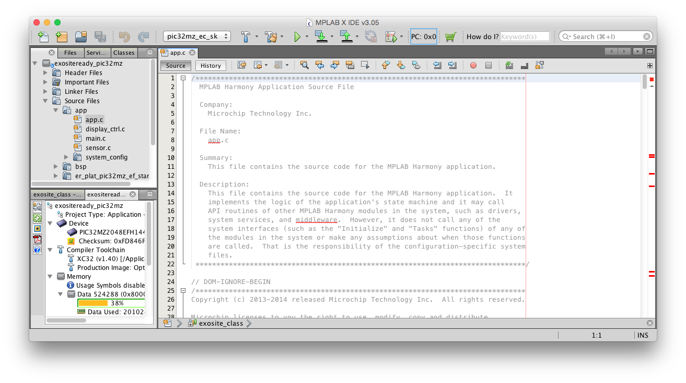
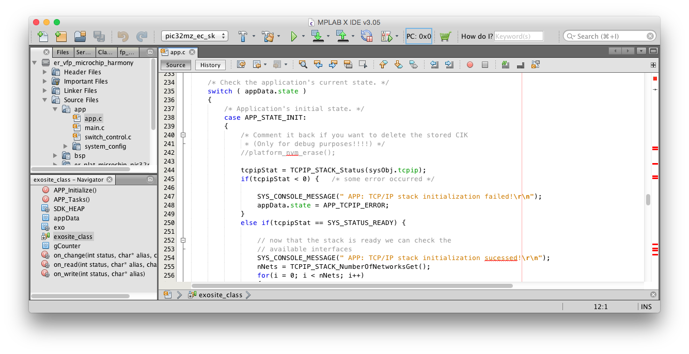
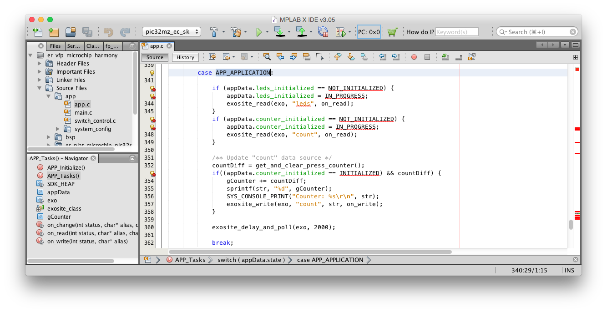
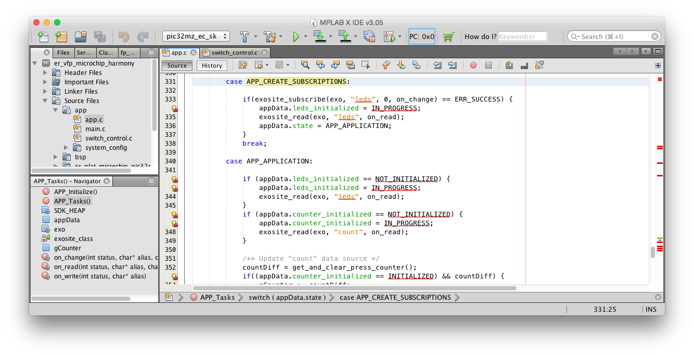
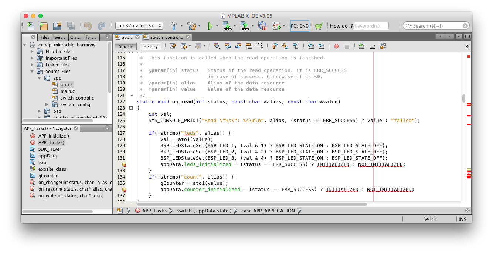

Lab 2 - Exploring the Source
You've now had some experience using the ExositeReady SDK on the Embedded Connectivity Starter Kit and have gotten it to connect to the Exosite platform. Next, in this lab, you'll explore the code more and make some subtle tweaks to how the example reports data to the platform. This is intended to increase your familiarity with where the key pieces of functionality are handled in the application.
Requirements
- PIC32MZ Embedded Connectivity Starter Kit
- An Internet Connection
- A Computer with MPLAB IDE, including:
- MPLABX IDE v 3.30
- Harmony v1.08
- XC32 v1.40b
- The ExositeReady SDK, plus
- The PIC32MZECSK port & example application
The requirements here are the same as the first lab. If you have not completed that lab yet, it's highly recommend you do so before starting this lab.
Exploring the Code
We'll start of in the source for the main application code which you can find in Source File -> app -> app.c. In this file you'll find the main APP_TASKS function that should be familiar to you if you've ever written firmware using Microchip's Harmony libraries before.

If you're not familiar with this application structure, you'll see that the application is structured as a state machine where the APP_TASKS function returns when it is done with it's current task, keeping track of the application's state in the appData global variable structure. The main body of the function takes the form of a single switch statement with each case being an individual state of the state machine.
Try to follow the state through the application and understand the basic progression of the state machine.

In this application the app will spend most of it's time in the APP_APPLICATION state. This is where all the interaction with the Exosite platform is controlled.

Here you can see that we're reading a couple of dataports, "leds" and "count". "leds" is pretty obvious, it reads a value that sets which LEDs are on and which are off. "count" is simply a numeric value that we can change with SW1 and SW2, this initial read is just to sync the previous value from the cloud.
"count" is also written back up to the cloud anytime the value changes in the next section.
The
exosite_readcall in this state for "leds" should actually never be called, see if you can figure out why.
See that we first call exosite_subscribe and do an initial call to exosite_read before the main application state is entered. Also, note that we're doing BOTH a read and a subscribe. A subscribe call will only receive notification of changes that are made in the future, it will not receive a value for the current value if one exists.

If you look at the on_read call as well as the code to write to the "count" dataport you'll see that the numeric values of the count and leds state are converted to ASCII text. All requests that are sent to the API this demo uses require the messages to be UTF-8 encoded (of which ASCII is a subset, if you didn't know) so this library requires you to format all your requests before handing them off. It's done this way to simplify the communication protocols, using only standard web formats.

You may also note that we're only using a single dataport to encode the state of all of the LEDs. This way of encoding multiple independent inputs or outputs is done to reduce the resources required to communicate the data to the platform. You could split each LED and button into their own dataport, but that would require writing to multiple button-related dataports and, more importantly, opening several connections to the platform to wait on changes to each LED-related dataport. This is partially a limitation of the API used by this library, Exosite has new device-side APIs planned that will get rid of this limitation or, at least, reduce its effects.
Making some Tweaks
The 'Product' model that is being used for these demos has a few more dataports that aren't being used in the example application, let's make some really simple modifications to use them. We want to change to to reading the party_leds dataport for setting the state of the LEDs. We'll also want to make the buttons change the value in the party_on_off dataport.
The party_leds dataport uses the same format as the leds dataport. The party_on_off the same format as count, where "0" mean "off" and anything else means "on".
Before continuing to read the lab, try to see if you can make the changes to use these dataports instead of the ones included in the original example. If you're having trouble the following section will walk you through the steps needed.
The Walkthrough
Both of these changes should be fairly trivial, but here is a step-by-step walkthrough of the changes in case you missed anything.
First, for the changes to the LEDs you simply need to change any instance of the string "leds" to "party_leds". Make sure to change them in both the "APP_APPLICATION" and "APP_CREATE_SUBSCRIPTIONS" states of the main APP_Tasks function as well as in the on_read and on_change functions.
Second, to change the handling of the button, we'll leave most of the code that handles that alone again and just change the dataport to which it's written. Again, you'll need to change any instance of the string "count" to "party_on_off". You'll need to make this change in the "APP_APPLICATION" state of the main APP_Tasks function and the on_read function.
Now compile and flash you changes. Once this has finished and your board has rebooted and re-connected you should be able to press SW1 to turn "party mode" on and see the LEDs flash randomly.
Bonus Points
Currently, you can continue to change the value in party_on_off to be any number, but having '0' or '1' would be sufficient. Change the behavior so that one button writes '0' and the other writes '1'.
End of Lab 2
You've now completed this, somewhat contrived, example. Hopefully you've learned more about some of the details about how the ExositeReady SDK works. In the next and final lab of this class we will go through a more complex example that will add new sensors and a display to show you how to integrate other hardware into and ER SDK application.